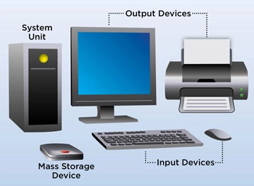

A computer system is a "complete" computer that includes the hardware, operating system (main software), and peripheral equipment needed and used for "full" operation. This term may also refer to a group of computers that are linked and function together, such as a computer network or computer cluster.
A desktop computer is a personal computing device designed to fit on top of a typical office desk. It houses the physical hardware that makes a computer run and connects to input devices such as the monitor, keyboard and mouse users interact with. Desktop computers are commonly used in the enterprise, as well as in consumer use cases such as gaming. In the enterprise, they are important because they are the main means for many users to do their jobs.
A laptop, laptop computer, or notebook computer is a small, portable personal computer (PC) with a screen and alphanumeric keyboard. Laptops combine all the input/output components and capabilities of a desktop computer, including the display screen, small speakers, a keyboard, data storage device, sometimes an optical disc drive, pointing devices (such as a touchpad or pointing stick), with an operating system, a processor and memory into a single unit. Most modern laptops feature integrated webcams and built-in microphones, while many also have touchscreens. Laptops can be powered either from an internal battery or by an external power supply from an AC adapter.